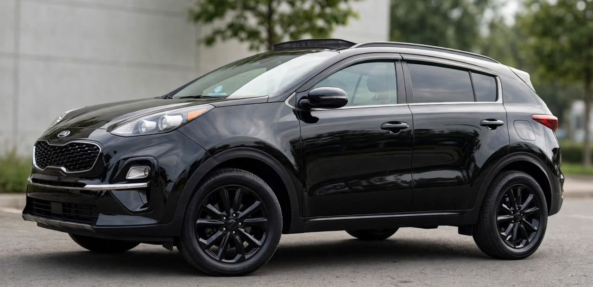

À vendre
Kia Sportage noir 2021
2021 · Essence · Automatique · 26 000 km
15 800 000 FCFA
Année2021
Kilométrage26 000 km
BoîteAutomatique
CarburantEssence
Moteur4 cylindres
Puissance fiscale14 CV
DémarrageBouton
IntérieurCuir
ToitOuvrant panoramique
CaméraRecul
Équipements
- Climatisation d’origine
- Volant multifonction
- Écran tactile
- Chargeur à induction
- Modes Normal, Éco et Sport
- Bluetooth audio
- Radio, USB et MP3
- Clignotants sur rétroviseurs
- Bande blanche
- Full option (selon le vendeur)
- Tous les papiers à jour (selon le vendeur)
Disponibilité, équipements, kilométrage et documents à confirmer avec le propriétaire lors de la visite.